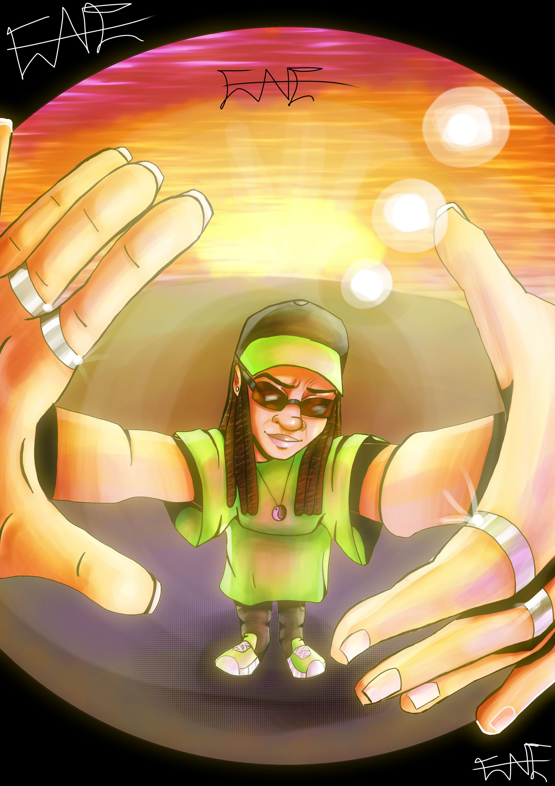
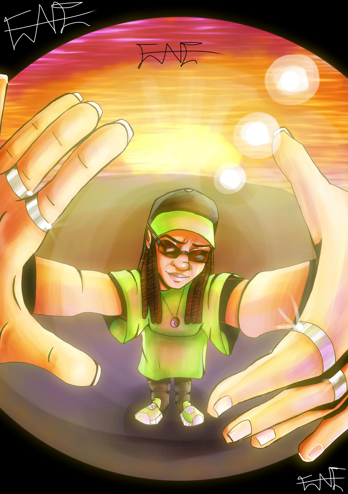

_____________________________
Here are several of what I consider my best works, some I have done for myself, while others where done for people who asked or for a community I was apart of Online.
Here are several of what I consider my best works, some I have done for myself, while others where done for people who asked or for a community I was apart of Online.
 
